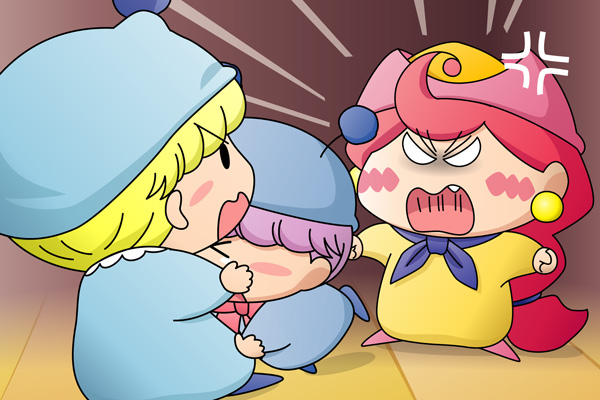

ムルモはリビングの隅っこの方へ歩いていきました。隅っこではパンタが一人で折り紙の続きをしていて、ムルモと目が合うとその手を休めました。
ムルモ「パンタしゃんはお昼までアクミしゃん達と一緒に
紙飛行機で遊んでいたんでしゅよね？」
パンタ「そうですっちよ。
ミルモお兄ちゃんが全然遊んでくれないから、アクミお姉ちゃんと
遊んでいたんですっち」
ムルモ「ふ～ん、そうでしゅか。
で、パンタしゃんはお昼の前に何度か食卓へ行ってるんでしゅよね？」
パンタ「はいですっち。
だけど誰もいなかったし、変わった様子もなかったですっちよ」
ムルモ「でしゅけど、コーヒーマシュマロにニコニコンＣを塗ることができたのは、
お昼ごはんの直前に食卓へ行ったパンタしゃんとアクミしゃんしか
考えられないでしゅよ」
パンタ「ボクたんは本当に紙飛行機を拾いに行っただけですっち」
ムルモ「それを証明出来る人はいないでしゅけどね」
パンタ「ボクたんを疑うなんてひどいですっち～～っ」
パンタは泣きながらリビングを出て行きました。
ムルモ「ちょ、ちょっと言い過ぎたでしゅかね・・・。
とりあえず次はアクミしゃんでしゅ」
ムルモは別の隅っこの方で昼寝をしようとしているアクミを見つけました。
ムルモ「アクミしゃん、ちょっといいでしゅか？」
アクミ「何だよ、あたいは今忙しいんだよ」
ムルモ「アクミしゃんはお昼ごはんの前に食卓へ行ったときに
何か変わった様子はなかったでしゅか？」
アクミ「あたいは紙飛行機を拾いにいっただけだからな。
それ以外のことは何も分からないよ」
ムルモ「そうでしゅか・・・アクミしゃんなら何か知ってると思ったんでしゅけどね」
アクミ「あたいを疑ってるのか？」
ムルモ「・・・アクミしゃん、ボクに隠し事をしないで、
ホントのことを教えてくだしゃいでしゅ～」

アクミ「いい加減にしな！
だいたいかわいこぶってれば何でもうまくいくというお前を見ていると
こっちがイライラしてくるんだよ！」
ムルモ「ほぇ・・・」
アクミ「まったくお前らは兄弟揃ってダメダメだな！
二度とあたいに話しかけるんじゃねぇ！」
ムルモ「お兄たま～～っ」
ムルモはそばにいたミルモに抱きついて泣いています。
ミルモ「アクミ！
おめえの言いたいことも分かるけど、言い過ぎなんだよ！」
アクミ「ふん！前から言いたかったことを言ったまでさ」
ミルモ「ムルモ、お前もちょっとは反省しろよな！やり過ぎだぞ」
ムルモ「あいでしゅ・・・」
おかしな出来事が続いたせいでみんなもイライラしているようです。二人の証言からすると、お昼ごはん前の食卓にはどうやら怪しい影は無かった様子。それにしても回を重ねるごとにムルモの推理が行き当たりばったりになってきているなぁ。そろそろムルモにはじっくり頭を使ってもらうよう、展開を考えていきたいと思います。
(2008/4/18)